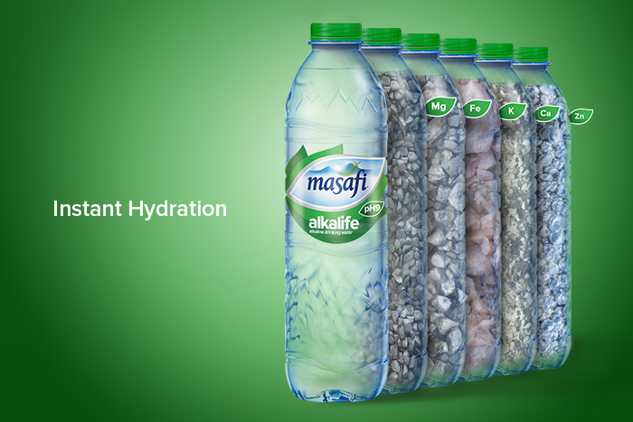
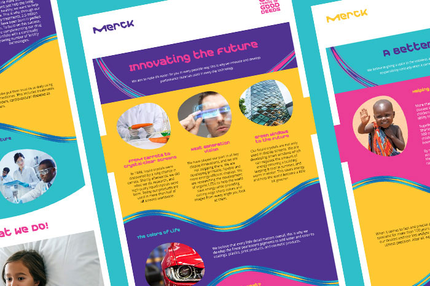
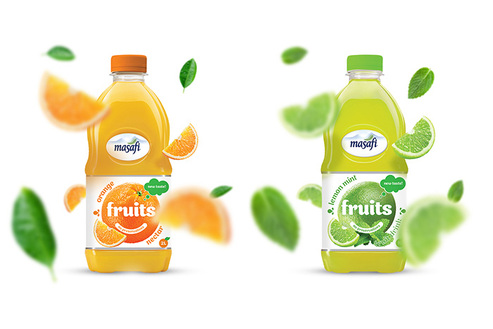
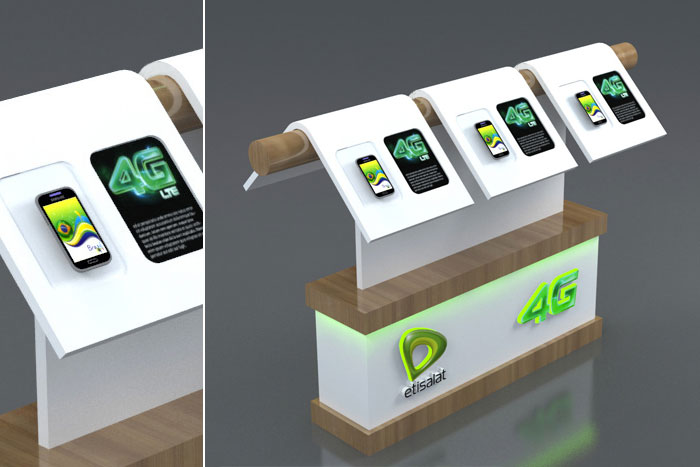
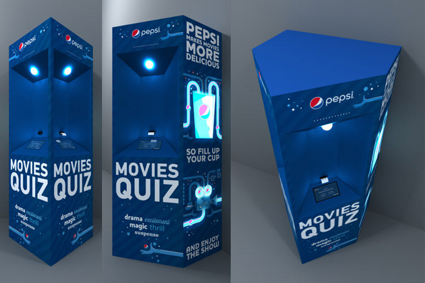
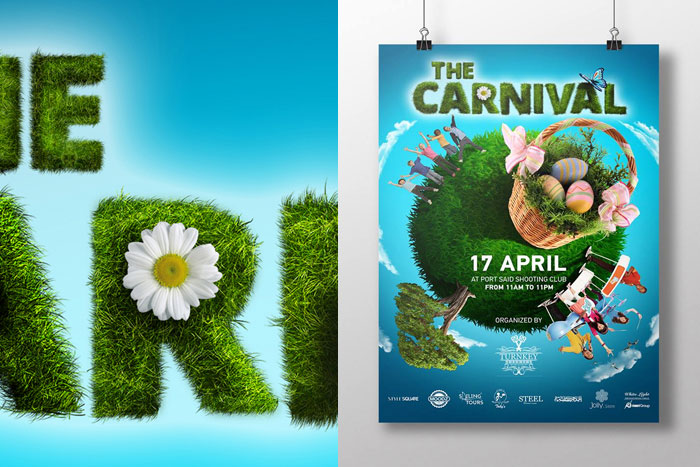
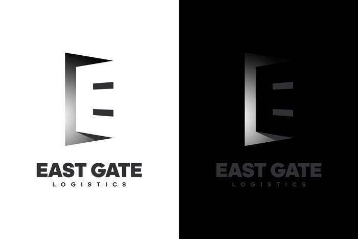

My Portfolio
Masafi - From Nature to Your Body
A double exposure made for Masafi targeting families. Telling them that Masafi's water is coming directly from nature to the bodies of yours and your beloved ones.
A double exposure made for Masafi targeting families. Telling them that Masafi's water is coming directly from nature to the bodies of yours and your beloved ones.

Masafi - Instant Hydration
Masafi's Alkalife contains many minerals in it, putting the main minerals in a row of bottles so that people can imagine how Alkalife is rich of many natural minerals.
Masafi's Alkalife contains many minerals in it, putting the main minerals in a row of bottles so that people can imagine how Alkalife is rich of many natural minerals.

Masafi - Feel Grateful
During Ramadan, Masafi has come with some offers for charity, this is a one of them for rich people to buy and donate Masafi's Pure cups for poor people and workers.
During Ramadan, Masafi has come with some offers for charity, this is a one of them for rich people to buy and donate Masafi's Pure cups for poor people and workers.
Masafi Heroes
As a concept for feeling grateful, I have mad a hero from Masafi's bottles. Each here is representing a type of people; the Pure's here is representing people who feel grateful for nature in a scout scarf, Zero's hero is representing people who feel grateful for family members in a normal scarf which anyone in the family can wear and the Alkalife's hero is representing people who feel grateful for being healthy.
As a concept for feeling grateful, I have mad a hero from Masafi's bottles. Each here is representing a type of people; the Pure's here is representing people who feel grateful for nature in a scout scarf, Zero's hero is representing people who feel grateful for family members in a normal scarf which anyone in the family can wear and the Alkalife's hero is representing people who feel grateful for being healthy.
Discover Egypt Poster 1
A photo manipulation made for Al Tayyar travel agency for their internal touristic trips for people to discover Egypt.
A photo manipulation made for Al Tayyar travel agency for their internal touristic trips for people to discover Egypt.
Tailored for You Poster
Another photo manipulation made for Al tayyar travel agency for people to customize their trips.
Another photo manipulation made for Al tayyar travel agency for people to customize their trips.
Discover Egypt Poster 2
A photo manipulation of a diver swimming across an Egyptian temple, combining two important types of tourism; diving and monuments. Made for Al Tayyar travel agency for foreign people to come and discover Egypt.
A photo manipulation of a diver swimming across an Egyptian temple, combining two important types of tourism; diving and monuments. Made for Al Tayyar travel agency for foreign people to come and discover Egypt.

Merck Newsletters
Three designs for Merck for them to be used as email newsletters for their celebration of 350 years of good deeds.
Three designs for Merck for them to be used as email newsletters for their celebration of 350 years of good deeds.
Masafi - Happy Halloween
Celebrating halloween, I have converted Masafi's Zero logotype into a halloween theme.
Celebrating halloween, I have converted Masafi's Zero logotype into a halloween theme.
Masafi - Deep Earth Water 1
Masafi brings their water from deep Earth. In this design I have a water spring coming out from below and filling the Pure bottle across the label with some palm tree leaves and a background of Al Hajjar Mountains where Masafi is bringing their water from.
Masafi brings their water from deep Earth. In this design I have a water spring coming out from below and filling the Pure bottle across the label with some palm tree leaves and a background of Al Hajjar Mountains where Masafi is bringing their water from.

Masafi Juices
As Masafi made their juice from 100% natural fruits and don't contain artificial additives. These two designs reflects how pure and fresh their juices are.
As Masafi made their juice from 100% natural fruits and don't contain artificial additives. These two designs reflects how pure and fresh their juices are.
Masafi - Taste of Summer
With some simple graphic elements, I have made a summer theme for Masafi's Pure and Zero bottles as a seasonal posters for people to stay hydrated during summer.
With some simple graphic elements, I have made a summer theme for Masafi's Pure and Zero bottles as a seasonal posters for people to stay hydrated during summer.
New Day with Masafi
A new day with Masafi Zero comes with a skyline of Dubai in their bottle, sunlight and the Zero's hashtag flying by an airplane across the city.
A new day with Masafi Zero comes with a skyline of Dubai in their bottle, sunlight and the Zero's hashtag flying by an airplane across the city.
Masafi - Deep Earth Water 2
Masafi is the only deep earth water in the UAE and the only water filtered by nature so I have shaped a cave entrance to match the outline of their Pure bottle and just put the bottle label on it.
Masafi is the only deep earth water in the UAE and the only water filtered by nature so I have shaped a cave entrance to match the outline of their Pure bottle and just put the bottle label on it.
Merck - The Original
This one took much time to complete, starting all scenes from still images to 3D Live Photos. I have made the whole video except for the voice over and the music of course. Click here to watch the video.
This one took much time to complete, starting all scenes from still images to 3D Live Photos. I have made the whole video except for the voice over and the music of course. Click here to watch the video.
Merck - 350 Years of Good Deeds
Another video for Merck celebrating 350 years of good deeds, click to watch the video.
Another video for Merck celebrating 350 years of good deeds, click to watch the video.
Masafi - Zero Sodium
Masafi Zero is a sodium free water, the message in the design is simple; the Zero logotype formed by salt representing it is a zero sodium water.
Masafi Zero is a sodium free water, the message in the design is simple; the Zero logotype formed by salt representing it is a zero sodium water.
Etisalat 4G Display Stand
One of three options designed for Etisalat where their customers can try the 4G internet speed on selected mobile phones and tablets.
One of three options designed for Etisalat where their customers can try the 4G internet speed on selected mobile phones and tablets.
Tropicana Frutz Booth for Games
One of two options designed for Tropicana Frutz launching in Egypt where customers can try some games and win some drink bottles.
One of two options designed for Tropicana Frutz launching in Egypt where customers can try some games and win some drink bottles.
The Magic Book
A personal project, I have designed, printed and distributed 1000 copies of that book in Egypt and in some other countries. Watch a live demo of the book to see how images can come to life in a static paper!
A personal project, I have designed, printed and distributed 1000 copies of that book in Egypt and in some other countries. Watch a live demo of the book to see how images can come to life in a static paper!
Tropicana Frutz Booth for Games
One of two options designed for Tropicana Frutz launching in Egypt where customers can try some games and win some drink bottles.
One of two options designed for Tropicana Frutz launching in Egypt where customers can try some games and win some drink bottles.
Pure Boost X Window Display
As a part of Pure Boost X campaign designed for Adidas, I have partially supervised on the production process.
As a part of Pure Boost X campaign designed for Adidas, I have partially supervised on the production process.
Never Follow Launch Zone
As a part of Never Follow campaign designed for Adidas, I have partially supervised on the production process.
As a part of Never Follow campaign designed for Adidas, I have partially supervised on the production process.
Oven Spud Logo Design
Reflecting the oval shape and colors of a potato, with a bite at the corner, I have designed this logo for a food cart which produce premium backed potatoes with a fill of selected items.
Reflecting the oval shape and colors of a potato, with a bite at the corner, I have designed this logo for a food cart which produce premium backed potatoes with a fill of selected items.
Football 3D Modeling
I have designed this football for a 3D game personal project, clear and covered with mud options.
I have designed this football for a 3D game personal project, clear and covered with mud options.

Etisalat 4G Display Stand
One of three options designed for Etisalat where their customers can try the 4G internet speed on selected mobile phones and tablets.
One of three options designed for Etisalat where their customers can try the 4G internet speed on selected mobile phones and tablets.
Coke Corner
Coca-Cola was one of the sponsors of Dawri Al Hayah TV show, this was designed as a studio where a broadcaster and two football teams are making a conversation after each match.
Coca-Cola was one of the sponsors of Dawri Al Hayah TV show, this was designed as a studio where a broadcaster and two football teams are making a conversation after each match.
The Lion of Qasr El Nil Bridge
A work in progress personal project painted on Photoshop with a graphic tablet.
A work in progress personal project painted on Photoshop with a graphic tablet.
Barah Logo Design
This logo was designed for a cafe for girls only with some girly colors and shapes.
This logo was designed for a cafe for girls only with some girly colors and shapes.
iBake Menu
A folded menu designed for a handmade pastries with some sketchy icons that presents each section of the menu.
A folded menu designed for a handmade pastries with some sketchy icons that presents each section of the menu.

Pepsi Movies Quiz Booth
A booth to be used in cinema theatres lobbies designed for Pepsi where two customers can stand and answer some few questions about movies for a chance to win a voucher to buy Pepsi products.
A booth to be used in cinema theatres lobbies designed for Pepsi where two customers can stand and answer some few questions about movies for a chance to win a voucher to buy Pepsi products.
Etisalat Recharge Display Stand
One of two options presented to Etisalat where the customers of their retail stores can recharge their mobile phones and tablets while being at the store.
One of two options presented to Etisalat where the customers of their retail stores can recharge their mobile phones and tablets while being at the store.
Wooden Deer
A handmade wooden sculpture of a deer, I have used a one piece of wood and it took me 10 minutes on a scrollsaw to finish it.
A handmade wooden sculpture of a deer, I have used a one piece of wood and it took me 10 minutes on a scrollsaw to finish it.
Tropicana Frutz Cart
Design for Tropicana Frutz for their launching in Egypt, they planned to use this cart to move in malls and distribute the bottles on random customers to taste the new drink.
Design for Tropicana Frutz for their launching in Egypt, they planned to use this cart to move in malls and distribute the bottles on random customers to taste the new drink.
IGFAS Brochure
IGFAS is a financing company with five branches around the globe, I have designed this brochure for them to present their financing projects.
IGFAS is a financing company with five branches around the globe, I have designed this brochure for them to present their financing projects.
Ink Pen Sketching
While being in a cafe, the tea taste wasn't good for me but I have enjoyed sketching the cup with my ink pen.
While being in a cafe, the tea taste wasn't good for me but I have enjoyed sketching the cup with my ink pen.
Ramadan Lantern
I have designed this metal classic Ramadan lantern for a photographer to be used in a photo session manipulation.
I have designed this metal classic Ramadan lantern for a photographer to be used in a photo session manipulation.
Old Cairo Scene Sketch
A personal WIP project, I have sketched this scene to start modeling a 3D model of it later.
A personal WIP project, I have sketched this scene to start modeling a 3D model of it later.
Lava Burger Logo and Bag Design
To reflect the feeling of the name, I had to melt the cheese in the logo that way, I have also simply used the logo in the center of the bag face and the slogan and the bottom of it.
To reflect the feeling of the name, I had to melt the cheese in the logo that way, I have also simply used the logo in the center of the bag face and the slogan and the bottom of it.
Sky Telecom Booth
Designed for Sky Telecom Egypt for their participation in Cairo ICT 2017 to present their services to the visitors.
Designed for Sky Telecom Egypt for their participation in Cairo ICT 2017 to present their services to the visitors.
Brilliance Logo Design
The client wanted their logo to be a piece of the future or coming from space so I have designed it as bended semi-transparent oval to form tooth.
The client wanted their logo to be a piece of the future or coming from space so I have designed it as bended semi-transparent oval to form tooth.
Offerly App Icon and UI
3D icon designed for iOS and Android. I have also participated in designing the user interface of it. This app is not released yet.
3D icon designed for iOS and Android. I have also participated in designing the user interface of it. This app is not released yet.
Environment Laboratory
This is my graduation project, as an environment project I had to show the control of the environment over the building.
This is my graduation project, as an environment project I had to show the control of the environment over the building.
Cairo International Film Festival Logo Rebranding
A personal project to develop Cairo International Film Festival logo.
A personal project to develop Cairo International Film Festival logo.
Back to school
A bag made of fabric designed for a stationary store for their distinguished customers.
A bag made of fabric designed for a stationary store for their distinguished customers.
Etisalat Recharge Display Stand
One of two options presented to Etisalat where the customers of their retail stores can recharge their mobile phones and tablets while being at the store.
One of two options presented to Etisalat where the customers of their retail stores can recharge their mobile phones and tablets while being at the store.

Kazyon Side Sign
While Kazyon was complaining of that their customers don't know what Kazyon is; I sketched this side sign with a shopping cart icon on Kazyon orange background to simply inform the customers in street that Kazyon is a supermarket.
While Kazyon was complaining of that their customers don't know what Kazyon is; I sketched this side sign with a shopping cart icon on Kazyon orange background to simply inform the customers in street that Kazyon is a supermarket.

The Carnival Poster
I have designed this poster for an event in spring at the Egyptian Shooting Club.
I have designed this poster for an event in spring at the Egyptian Shooting Club.

Coca-Cola Shelf Stand
For mass production, the design had to be so easy and low cost in materials. This shelf stand was designs to display Coca-Cola bottles and some gifts.
For mass production, the design had to be so easy and low cost in materials. This shelf stand was designs to display Coca-Cola bottles and some gifts.
Pencil Character
I have sketched this in a team project where someone else designed a 3D character of this sketch to be animated in some educational films.
I have sketched this in a team project where someone else designed a 3D character of this sketch to be animated in some educational films.
3alnet Logo Design and Branding
3alnet is an online company specialized in social media marketing, I have designed their logo as a mouse cursor doing a click.
3alnet is an online company specialized in social media marketing, I have designed their logo as a mouse cursor doing a click.
Etisalat 4G Display Stand
One of three options designed for Etisalat where their customers can try the 4G internet speed on selected mobile phones and tablets. This option was accepted and approximately 50 of it was produced and distributed in Etisalat selected branches.
One of three options designed for Etisalat where their customers can try the 4G internet speed on selected mobile phones and tablets. This option was accepted and approximately 50 of it was produced and distributed in Etisalat selected branches.
Handmade With Love Logo Design
For a handmade woven fabric small company, I have designed this spiral heart to reflect the name the feeling of weaving.
For a handmade woven fabric small company, I have designed this spiral heart to reflect the name the feeling of weaving.
Legend Icon
This was designed as a profile picture to the official page of the legend captain Mahmoud El Gohary on Facebook.
This was designed as a profile picture to the official page of the legend captain Mahmoud El Gohary on Facebook.
Garnier Pure Active Display Stand
Designed for Grenier to display their Pure Active products, totally made of hard cardboard.
Designed for Grenier to display their Pure Active products, totally made of hard cardboard.
OLMS Folder
As a company working on shipping and customs clearance, the design of the folder reflects their services and advantages by some icons inside and a brief about the company. I have also designed their logo and identity.
As a company working on shipping and customs clearance, the design of the folder reflects their services and advantages by some icons inside and a brief about the company. I have also designed their logo and identity.
Cairo Bake Pastry Box
Cairo Bake is a company works under the Ministry of Supplies; they make premium pastries so they wanted a premium box design for their products.
Cairo Bake is a company works under the Ministry of Supplies; they make premium pastries so they wanted a premium box design for their products.
Noble Egypt Logo Design and Branding
Noble Egypt is a project to simulate the Noble Prize but it only give the prize in science and literature. They wanted a new logo, I have designed this to reflect the first letter in the name in both Arabic and English, its colors also reflects the science "silver" the color of metals and literature "paige" the color of parchments. I have also designed the shape of the prize and the uniform for the organizers.
Noble Egypt is a project to simulate the Noble Prize but it only give the prize in science and literature. They wanted a new logo, I have designed this to reflect the first letter in the name in both Arabic and English, its colors also reflects the science "silver" the color of metals and literature "paige" the color of parchments. I have also designed the shape of the prize and the uniform for the organizers.
Detective Conan Ink Sketch
Using only an ink pen I have sketched one of my lovely cartoon characters, Detective Conan.
Using only an ink pen I have sketched one of my lovely cartoon characters, Detective Conan.

East Gate Logo Design
The logo is a door opens to the right hand which refers to the east while the door of the gate shapes the letter "E".
The logo is a door opens to the right hand which refers to the east while the door of the gate shapes the letter "E".
Nagham Cafe Logo Design
An oriental decorated cafe, the logo reflects the colors of the Arab tent fabric, the shapes of the letters reflects the art of Arabic Calligraphy.
An oriental decorated cafe, the logo reflects the colors of the Arab tent fabric, the shapes of the letters reflects the art of Arabic Calligraphy.
Zawaya Logo Design
Zawaya is a handmade woven fabric company, the word Zawaya means angles in English so the logo is formed from many angles. A secret message is hidden in this logo, all letters in Zawaya can be found inthe void lines between the triangles in the logo.
Zawaya is a handmade woven fabric company, the word Zawaya means angles in English so the logo is formed from many angles. A secret message is hidden in this logo, all letters in Zawaya can be found inthe void lines between the triangles in the logo.
Valiant City Game, Mission Loading
This is a work in progress project; I have manipulated all these items on Photoshop to form this loading screen.
This is a work in progress project; I have manipulated all these items on Photoshop to form this loading screen.
Window Display
As a part of Nemesis campaign designed for Adidas, I have partially supervised on the production process.
As a part of Nemesis campaign designed for Adidas, I have partially supervised on the production process.